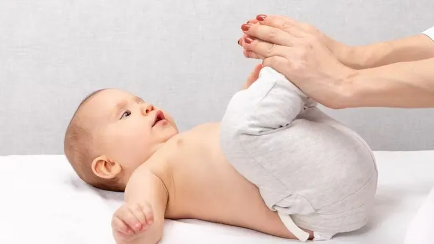
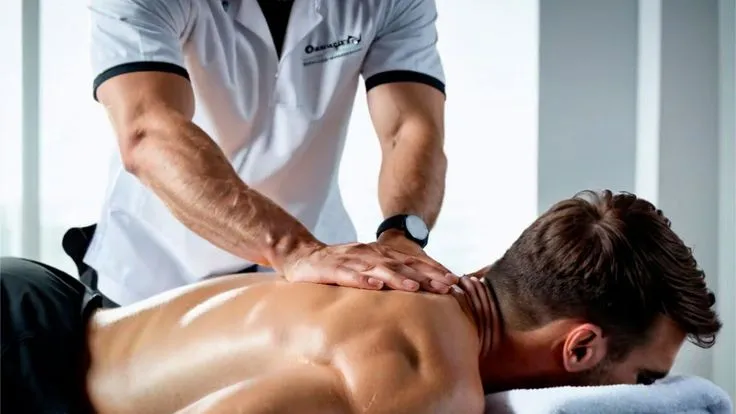

À qui s'adresse l'ostéopathie au Grand-Quevilly ?
Du nourrisson au senior, du sportif à la femme enceinte : votre ostéopathe au Grand-Quevilly adapte sa prise en charge à chaque âge et à chaque besoin.
Ostéopathie pour les adultes
L'ostéopathie concerne en premier lieu les adultes souffrant de douleurs mécaniques ou fonctionnelles. Votre ostéopathe au Grand-Quevilly prend en charge les troubles qui impactent le quotidien et la qualité de vie, qu'ils soient récents ou installés depuis longtemps.
Douleurs de dos et troubles musculo-squelettiques
Lombalgie, cervicalgie, dorsalgie, sciatique, cruralgie, douleurs intercostales : les douleurs de dos représentent le premier motif de consultation en ostéopathie. Au Grand-Quevilly, de nombreux patients travaillent en position assise prolongée — dans les bureaux de l'agglomération rouennaise, au centre commercial des Bruyères ou dans le secteur tertiaire de la métropole — et développent des tensions posturales que l'ostéopathie soulage efficacement.
Les douleurs articulaires des épaules, des genoux, des hanches et des poignets répondent également bien aux techniques de mobilisation douce et de travail myofascial.
Stress, fatigue et troubles fonctionnels
Le stress chronique provoque une cascade de tensions musculaires, diaphragmatiques et viscérales. L'ostéopathie agit sur ces verrous mécaniques pour relancer la capacité de récupération du corps. Les troubles fonctionnels digestifs (ballonnements, reflux, transit irrégulier), les migraines de tension et les troubles du sommeil font partie des motifs régulièrement pris en charge au cabinet.
Ostéopathe pour bébé et nourrisson au Grand-Quevilly

Quand consulter pour votre bébé ?
Un bilan ostéopathique est recommandé dans les premières semaines de vie, notamment après un accouchement difficile (ventouse, forceps, césarienne, travail prolongé), une naissance prématurée ou une grossesse gémellaire. Plus le nourrisson est vu tôt, plus les restrictions de mobilité détectées à la naissance se corrigent facilement.
De nombreux parents du Grand-Quevilly, du Petit-Quevilly et de Sotteville-lès-Rouen consultent après une orientation de leur sage-femme ou de leur pédiatre. La maternité du CHU de Rouen, située à quelques minutes du cabinet, recommande régulièrement un bilan ostéopathique post-natal.
Les motifs fréquents chez le nourrisson
Les coliques du nourrisson, la plagiocéphalie (déformation positionnelle du crâne), les régurgitations excessives, les troubles du sommeil et les difficultés de succion lors de l'allaitement sont les motifs les plus courants. Votre ostéopathe utilise des techniques crâniennes extrêmement légères — la pression exercée n'excède pas le poids d'une pièce de monnaie — pour libérer les tensions accumulées pendant la vie intra-utérine et l'accouchement.
Ostéopathie et grossesse au Grand-Quevilly
Accompagnement prénatal
La grossesse modifie profondément la posture et la biomécanique du corps. L'augmentation progressive du poids du ventre déplace le centre de gravité, accentue la lordose lombaire et crée des compressions sur le bassin, le périnée et les organes digestifs. Votre ostéopathe au Grand-Quevilly accompagne ces transformations à chaque trimestre avec des techniques adaptées : mobilisations pelviennes, travail du diaphragme, relâchement des ligaments utérins et rééquilibrage du bassin.
Les douleurs lombaires, les sciatiques de grossesse, les reflux gastriques, les sensations de jambes lourdes et les troubles du sommeil sont les motifs les plus fréquents chez la femme enceinte. L'ostéopathie offre une alternative non médicamenteuse pour soulager ces désagréments.
Ostéopathie post-partum
Après l'accouchement, une consultation de bilan est recommandée pour vérifier la mobilité du bassin, du sacrum et du coccyx — notamment après un accouchement par voie basse avec épisiotomie ou après une césarienne. Cette séance contribue à une meilleure récupération et prépare le corps à la rééducation périnéale.
Ostéopathe pour sportif au Grand-Quevilly

Prévention des blessures
Un bilan ostéopathique régulier permet de détecter et de corriger les déséquilibres biomécaniques avant qu'ils ne provoquent des blessures. Les restrictions de mobilité articulaire, les adhérences fasciales et les tensions musculaires compensatoires sont autant de facteurs de risque que l'ostéopathie identifie et traite en amont.
Au Grand-Quevilly et dans l'agglomération rouennaise, les sportifs pratiquant le football, le handball, la course à pied, le tennis ou la natation au complexe sportif de la commune ou dans les clubs de Rouen rive gauche bénéficient d'un accompagnement adapté à leur discipline.
Récupération et performance
Après une compétition, un entraînement intense ou une blessure (entorse, tendinite, contracture, élongation), l'ostéopathie accélère la récupération en améliorant la circulation locale, en relâchant les tensions musculaires et en restaurant la mobilité articulaire. L'objectif est de remettre le sportif en activité dans les meilleures conditions, en évitant les compensations qui mènent aux récidives.
Ostéopathie pour les seniors
L'avancée en âge s'accompagne d'une diminution progressive de la souplesse articulaire, d'une perte de densité osseuse et d'un ralentissement de la capacité de récupération tissulaire. L'ostéopathie pour les seniors au Grand-Quevilly utilise des techniques particulièrement douces — mobilisations lentes, techniques fasciales, approche crânienne — qui respectent la fragilité des structures tout en améliorant le confort de vie.
Les motifs de consultation les plus fréquents chez le senior sont les douleurs arthrosiques (genou, hanche, colonne vertébrale), les raideurs matinales, les troubles de l'équilibre et les douleurs consécutives à des chutes. Une consultation à domicile au Grand-Quevilly est disponible pour les patients qui ne peuvent pas se déplacer au cabinet.
Pour en savoir plus sur le déroulement d'une séance, consultez la page consultation d'ostéopathie. Si votre situation nécessite une prise en charge rapide, rendez-vous sur la page consultation en urgence au Grand-Quevilly.
Questions fréquentes
Un nourrisson peut être vu dès les premiers jours de vie. Les techniques utilisées sont extrêmement douces et parfaitement sécurisées. Un bilan précoce est particulièrement recommandé après un accouchement instrumental (ventouse, forceps) ou une césarienne.
Oui, l'ostéopathie est adaptée et recommandée pendant toute la grossesse. Votre ostéopathe au Grand-Quevilly utilise des techniques douces pour soulager les douleurs lombaires, les sciatiques, les reflux et les tensions pelviennes qui accompagnent les modifications posturales de la grossesse.
L'ostéopathie optimise la biomécanique du sportif en corrigeant les déséquilibres et en améliorant la mobilité articulaire. Les sportifs consultent en prévention, en récupération après l'effort ou suite à une blessure pour un retour à l'activité dans les meilleures conditions.
Absolument. Les techniques sont adaptées à la fragilité osseuse et tissulaire liée à l'âge. Votre ostéopathe évalue systématiquement les contre-indications avant toute intervention et privilégie des mobilisations douces et progressives.
Les troubles de la posture (début de scoliose), les douleurs de croissance, les maux de tête récurrents, les otites à répétition et les difficultés de concentration liées à des tensions crâniennes sont les motifs les plus courants chez l'enfant au cabinet du Grand-Quevilly.
Prenez rendez-vous avec votre ostéopathe au Grand-Quevilly
Quel que soit votre âge ou votre besoin, votre ostéopathe adapte sa prise en charge.
Prendre rendez-vous